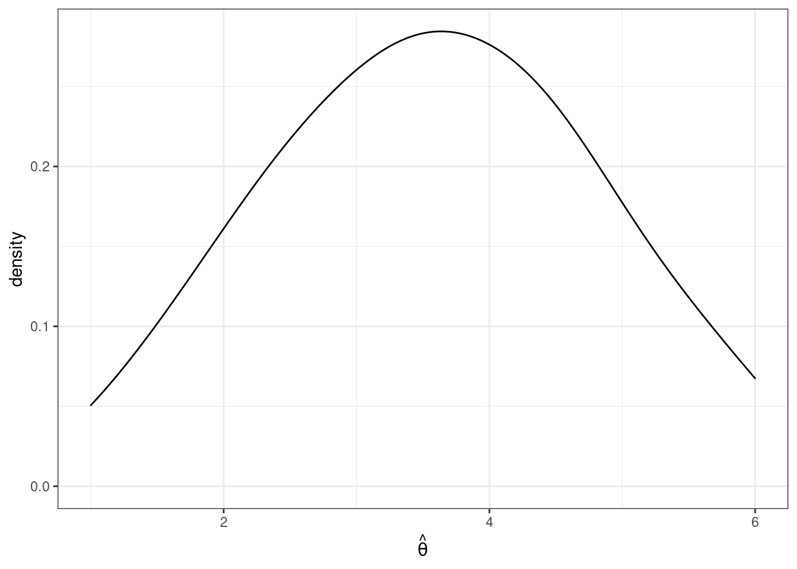
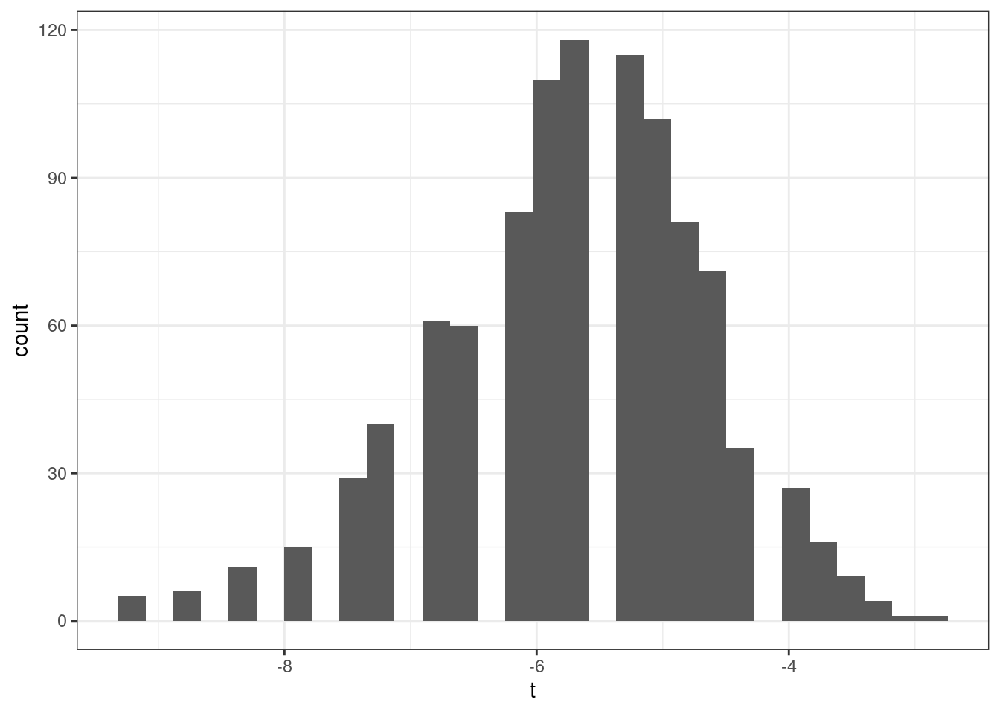

Topic 3 Probability and Statistics
This section contains our crash course review of topics in probability and statistics. The discussion mostly follows Chapters 2 & 3 in the Stock and Watson textbook, and I have cross-listed the relevant sections in the textbook here.
3.1 Topics in Probability
At a very high level, probability is the set of mathematical tools that allow us to think about random events.
Just to be clear, random means uncertain, not 50:50.
A simple example of a random event is the outcome from rolling a die.
Eventually, we will treat data as being random draws from some population. Examples of things that we will treat as random draws are things like a person’s hair color, height, income, etc. We will think of all of these as being random draws because ex ante we don’t know what they will be.
3.1.1 Data for this chapter
For this chapter, we’ll use data from the U.S. Census Bureau from 2019. It is not quite a full census, but we’ll treat it as the population throughout this chapter.
3.1.2 Random Variables
SW 2.1
A random variable is a numerical summary of some random event.
Some examples:
Outcome of roll of a die
A person’s height in inches
A firm’s profits in a particular year
Creating a random variable sometime involves “coding” non-numeric outcomes, e.g., setting
hair=1if a person’s hair color is black,hair=2if a person’s hair is blonde, etc.
We’ll generally classify random variables into one of two categories
Discrete — A random variable that takes on discrete values such as 0, 1, 2
Continuous — Takes on a continuum of values
These are broad categories because a lot of random variables in economics sit in between these two.
3.1.3 pdfs, pmfs, and cdfs
SW 2.1
The distribution of a random variable describes how likely it is take on certain values.
A random variable’s distribution is fully summarized by its:
probability mass function (pmf) if the random variable is discrete
probability density function (pdf) if the random variable is continuous
The pmf is somewhat easier to explain, so let’s start there. For some discrete random variable \(X\), its pmf is given by
\[ f_X(x) = \mathrm{P}(X=x) \] That is, the probability that \(X\) takes on some particular value \(x\).
Example 3.1 Suppose that \(X\) denotes the outcome of a roll of a die. Then, \(f_X(1)\) is the probability of rolling a one. And, in particular,
\[ f_X(1) = \mathrm{P}(X=1) = \frac{1}{6} \]
Example 3.2 Let’s do a bit more realistic example where we look at the pmf of education in the U.S. Suppose that \(X\) denotes the years of education that a person has. Then, \(f_X(x)\) is the probability that a person has exactly \(x\) years of education. We can set \(x\) to different values and calculate the probabilities of a person having different amounts of education. That’s what we do in the following figure:
Figure 3.1: pmf of U.S. education
There are some things that are perhaps worth pointing out here. The most common amount of education in the U.S. appears to be exactly 12 years — corresponding to graduating from high school; about 32% of the population has that level of education. The next most common number of years of education is 16 — corresponding to graduating from college; about 24% of individuals have this level of education. Other relatively common values of education are 13 years (14% of individuals) and 18 (13% of individuals). About 1% of individuals report 0 years of education. It’s not clear to me whether or not that is actually true or reflects some individuals mis-reporting their education.
Before going back to the pdf, let me describe another way to fully summarize the distribution of a random variable.
- Cumulative distribution function (cdf) - The cdf of some random variable \(X\) is defined as
\[ F_X(x) = \mathrm{P}(X \leq x) \] In words, this cdf is the probability that the random \(X\) takes a value less than or equal to \(x\).
Example 3.3 Suppose \(X\) is the outcome of a roll of a die. Then, \(F_X(3) = \mathrm{P}(X \leq 3)\) is the probability of rolling 3 or lower. Thus,
\[ F_X(3) = \mathrm{P}(X \leq 3) = \frac{1}{2} \]
Example 3.4 Let’s go back to our example of years of education in the U.S. In this case, \(F_X(x)\) is the fraction of the population that has less than \(x\) years of education. We can calculate this for different values of \(x\). That’s what we do in the following figure:
Figure 3.2: cdf of U.S. educ
You can see that the cdf is increasing in the years of education. And there are big “jumps” in the cdf at values of years of education that are common such as 12 and 16.
We’ll go over some properties of pmfs and cdfs momentarily (perhaps you can already deduce some of them from the above figures), but before we do that, we need to go over some (perhaps new) tools.
3.1.4 Summation operator
It will be convenient for us to have a notation that allows us to add up many numbers/variables at the same time. To do this, we’ll introduce the \(\sum\) operation.
As a simple example, suppose that we have three variables (it doesn’t matter if they are random or not): \(x_1,x_2,x_3\) and we want to add them up. Then, we can write \[ \sum_{i=1}^3 x_i := x_1 + x_2 + x_3 \] Many timess, once we have data, there will be n “observations” and we can add them up by: \[ \sum_{i=1}^n x_i = x_1 + x_2 + \cdots + x_n \] Properties:
For any constant \(c\),
\[ \sum_{i=1}^n c = n \cdot c \]
[This is just the definition of multiplication]
For any constant c,
\[ \sum_{i=1}^n c x_i = c \sum_{i=1}^n x_i \]
In words: constants can be moved out of the summation.
We will use the property often throughout the semester.
As an example,
\[ \begin{aligned} \sum_{i=1}^3 7 x_i &= 7x_1 + 7x_2 + 7x_3 \\ &= 7(x_1 + x_2 + x_3) \\ &= 7 \sum_{i=1}^3 x_i \end{aligned} \]
where the first line is just the definition of the summation, the second equality factors out the 7, and the last equality writes the part about adding up the \(x\)’s using summation notation.
3.1.5 Properties of pmfs and cdfs
Let’s define the support of a random variable \(X\) — this is the set of all possible values that \(X\) can possibly take. We’ll use the notation \(\mathcal{X}\) to denote the support of \(X\).
Example 3.5 Suppose \(X\) is the outcome from a roll of a die. Then, the support of \(X\) is given by \(\mathcal{X} = \{1,2,3,4,5,6\}\). In other words, the only possible values for \(X\) are from \(1,\ldots,6\).
Example 3.6 Suppose \(X\) is the number of years of education that a person has. The support of \(X\) is given by \(\mathcal{X} = \{0, 1, 2, \ldots, 20\}\). Perhaps I should have chosen a larger number than 20 to be the maximum possible value that \(X\) could take, but you will get the idea — a person’s years of education can be 0 or 1 or 2 or up to some maximum value.
Properties of pmfs
For any \(x\), \(0 \leq f_X(x) \leq 1\)
In words: the probability of \(X\) taking some particular value can’t be less than 0 or greater than 1 (neither of those would make any sense)
\(\sum_{x \in \mathcal{X}} f_X(x) = 1\)
In words: if you add up \(\mathrm{P}(X=x)\) across all possible values that \(X\) could take, they sum to 1.
Properties of cdfs for discrete random variables
For any \(x\), \(0 \leq F_X(x) \leq 1\)
In words: the probability that \(X\) is less than or equal to some particular value \(x\) has to be between 0 and 1.
If \(x_1 < x_2\), then \(F_X(x_1) \leq F_X(x_2)\)
In words: the cdf is increasing in \(x\) (e.g., it will always be the case that \(\mathrm{P}(X \leq 3) \leq \mathrm{P}(X \leq 4)\)).
\(F_X(-\infty)=0\) and \(F_X(\infty)=1\)
In words: if you choose small enough values of \(x\), the probability that \(X\) will be less than that is 0; similar (but opposite) logic applies for big values of \(x\).
Connection between pmfs and cdfs
\(F_X(x) = \displaystyle \sum_{z \in \mathcal{X} \\ z \leq x} f_X(z)\)
In words: you can “recover” the cdf from the pmf by adding up the pmf across all possible values that the random variable could take that are less than or equal to \(x\). This will be clearer with an example:
Example 3.7 Suppose that \(X\) is the outcome of a roll of a die. Earlier we showed that \(F_X(3) = 1/2\). We can calculate this by
\[ \begin{aligned} F_X(3) &= \sum_{z \in \mathcal{X} \\ z \leq 3} f_X(z) \\ &= \sum_{z=1}^3 f_X(z) \\ &= f_X(1) + f_X(2) + f_X(3) \\ &= \frac{1}{6} + \frac{1}{6} + \frac{1}{6} \\ &= \frac{1}{2} \end{aligned} \]
3.1.6 Continuous Random Variables
SW 2.1
For continuous random variables, you can define the cdf in exactly the same way as we did for discrete random variables. That is, if \(X\) is a continuous random variable,
\[ F_X(x) = \mathrm{P}(X \leq x) \]
Example 3.8 Suppose \(X\) denotes an individual’s yearly wage income. The cdf of \(X\) looks like

Figure 3.3: cdf of U.S. wage income
From the figure, we can see that about 24% of working individuals in the U.S. each $20,000 or less per year, 61% of working individuals earn $50,000 or less, and 88% earn $100,000 or less.
It’s trickier to define an analogue to the pmf for a continuous random variable (in fact, this is the main reason for our separate treatment of discrete and continuous random variables). For example, suppose \(X\) denotes the length of a phone conversation. As long as we can measure time finely enough, the probability that a phone conversation lasts exactly 1189.23975381 seconds (this is about 20 minutes) is 0. Instead, for a continuous random variable, we’ll define its probability density function (pdf) as the derivative of its cdf, that is,
\[ f_X(x) := \frac{d \, F_X(x)}{d \, x} \] Recall that the slope of the cdf will be larger in places where \(F_X(x)\) is “steeper.”
Regions where the pdf is larger correspond to more likely values of \(X\) — in this sense the pdf is very similar to the pmf.
We can also write the cdf as an integral over the pdf. That is,
\[ F_X(x) = \int_{-\infty}^x f_X(z) \, dz \] Integration is roughly the continuous version of a summation — thus, this expression is very similar to the expression above for the cdf in terms of the pmf when \(X\) is discrete.
More properties of cdfs
\(\mathrm{P}(X > x) = 1 - \mathrm{P}(X \leq x) = 1-F_X(x)\)
In words, if you want to calculate the probability that \(X\) is greater than some particular value \(x\), you can do that by calculating \(1-F_X(x)\).
\(\mathrm{P}(a \leq X \leq b) = F_X(b) - F_X(a)\)
In words: you can also calculate the probability that \(X\) falls in some range using the cdf.
Example 3.9 Suppose \(X\) denotes an individual’s yearly wage income. The pdf of \(X\) looks like

Figure 3.4: pdf of U.S. wage income
From the figure, we can see that the most common values of yearly income are around $25-30,000 per year. Notice that this corresponds to the steepest part of the cdf from the previous figure. The right tail of the distribution is also long. This means that, while incomes of $150,000+ are not common, there are some individuals who have incomes that high.
Moreover, we can use the properties of pdfs/cdfs above to calculate some specific probabilities. In particular, we can calculating probabilities by calculating integrals (i.e., regions under the curve) / relating the pdf to the cdf. First, the red region above corresponds to the probability of a person’s income being between $50,000 and $100,000. This is given by \(F(100,000) - F(50000)\). We can compute this in R using the ecdf function. In particular,
incwage_cdf <- ecdf(us_data$incwage)
round(incwage_cdf(100000) - incwage_cdf(50000),3)
#> [1] 0.27The green region in the figure is the probability of a person’s income being above $150,000. Using the above properties of cdfs, we can calculate it as \(1-F(150000)\) which is
round(1-incwage_cdf(150000), 3)
#> [1] 0.0523.1.7 Expected Values
SW 2.2
The expected value of some random variable \(X\) is its (population) mean and is written as \(\mathbb{E}[X]\). [I tend to write \(\mathbb{E}[X]\) for the expected value, but you might also see notation like \(\mu\) or \(\mu_X\) for the expected value.]
The expected value of a random variable is a feature of its distribution. In other words, if you know the distribution of a random variable, then you also know its mean.
The expected value is a measure of central tendency (alternative measures of central tendency are the median and mode).
Expected values are a main concept in the course (and in statistics/econometrics more generally). I think there are two main reasons for this:
Unlike a cdf, pdf, or pmf, the expected value is a single number. This means that it is easy to report. And, if you only knew one feature (at least a feature that that only involves a single number) of the distribution of some random variable, probably the feature that would be most useful to know would be the mean of the random variable.
Besides that, there are some computational reasons (we will see these later) that the mean can be easier to estimate than, say, the median of a random variable
If \(X\) is a discrete random variable, then the expected value is defined as
\[ \mathbb{E}[X] = \sum_{x \in \mathcal{X}} x f_X(x) \]
If \(X\) is a continuous random variable, then the expected value is defined as
\[ \mathbb{E}[X] = \int_{\mathcal{X}} x f_X(x) \, dx \] Either way, you can think of these as a weighted average of all possible realizations of the random variable \(X\) where the weights are given by the probability of \(X\) taking that particular value. This may be more clear with an example…
Example 3.10 Suppose that \(X\) is the outcome from a roll of a die. Then, its expected value is given by
\[ \begin{aligned} \mathbb{E}[X] &= \sum_{x=1}^6 x f_X(x) \\ &= 1\left(\frac{1}{6}\right) + 2\left(\frac{1}{6}\right) + \cdots + 6\left(\frac{1}{6}\right) \\ &= 3.5 \end{aligned} \]
3.1.8 Variance
SW 2.2
The next most important feature of the distribution of a random variable is its variance. The variance of a random variable \(X\) is a measure of its “spread,” and we will denote it \(\mathrm{var}(X)\) [You might also sometimes see the notation \(\sigma^2\) or \(\sigma_X^2\) for the variance.] The variance is defined as
\[ \mathrm{var}(X) := \mathbb{E}\left[ (X - \mathbb{E}[X])^2 \right] \] Before we move forward, let’s think about why this is a measure of the spread of a random variable.
\((X-\mathbb{E}[X])^2\) is a common way to measure the “distance” between \(X\) and \(\mathbb{E}[X]\). It is always positive (whether \((X - \mathbb{E}[X])\) is positive or negative) which is a good feature for a measure of distance to have. It is also increasing in \(|X-\mathbb{E}[X]|\) which also seems a requirement for a reasonable measure of distance.
Then, the outer expectation averages the above distance across the distribution of \(X\).
An alternative expression for \(\mathrm{var}(X)\) that is often useful in calculations is
\[ \mathrm{var}(X) = \mathbb{E}[X^2] - \mathbb{E}[X]^2 \]
Sometimes, we will also consider the standard deviation of a random variable. The standard deviation is defined as
\[ \textrm{sd}(X) := \sqrt{\mathrm{var}(X)} \] You might also see the notation \(\sigma\) or \(\sigma_X\) for the standard deviation.
The standard deviation is often easier to interpret than the variance because it has the same “units” as \(X\). Variance “units” are squared units of \(X\).
That said, variances more often show up in formulas/derivations this semester.
3.1.9 Mean and Variance of Linear Functions
SW 2.2
For this part, suppose that \(Y=a + bX\) where \(Y\) and \(X\) are random variables while \(a\) and \(b\) are fixed constants.
Properties of Expectations
\(\mathbb{E}[a] = a\) [In words: the expected value of a constant is just the constant. This holds because there is nothing random about \(a\) — we just know what it is.]
\(\mathbb{E}[bX] = b\mathbb{E}[X]\) [In words: the expected value of a constant times a random variable is equal to the constant times the expected value of the random variable. We will use this property often this semester.]
\(\mathbb{E}[a + bX] = a + b\mathbb{E}[X]\) [In words: expected values “pass through” sums. We will use this property often this semester.]
You’ll also notice the similarity between the properties of summations and expectations. This is not a coincidence — it holds because expectations are defined as summations (or very closely related, as integrals).
Properties of Variance
\(\mathrm{var}(a) = 0\) [In words: the variance of a constant is equal to 0.]
\(\mathrm{var}(bX) = b^2 \mathrm{var}(X)\) [In words: A constant can come out of the variance, but it needs to be squared first.]
\(\mathrm{var}(a + bX) = \mathrm{var}(bX) = b^2 \mathrm{var}(X)\)
Example 3.11 Later on in the semester, it will sometimes be convenient for us to “standardize” some random variables. We’ll talk more about the reason to do this later, but for now, I’ll just give the typical formula for standardizing a random variable and we’ll see if we can figure out what the mean and variance of the standardized random variable are.
\[ Y = \frac{ X - \mathbb{E}[X]}{\sqrt{\mathrm{var}(X)}} \] Just to be clear here, we are standardizing the random variable \(X\) and calling its standardized version \(Y\). Let’s calculate its mean
\[ \begin{aligned} \mathbb{E}[Y] &= \mathbb{E}\left[ \frac{X - \mathbb{E}[X]}{\sqrt{\mathrm{var}(X)}} \right] \\ &= \frac{1}{\sqrt{\mathrm{var}(X)}} \mathbb{E}\big[ X - \mathbb{E}[X] \big] \\ &= \frac{1}{\sqrt{\mathrm{var}(X)}} \left( \mathbb{E}[X] - \mathbb{E}\big[\mathbb{E}[X]\big] \right) \\ &= \frac{1}{\sqrt{\mathrm{var}(X)}} \left( \mathbb{E}[X] - \mathbb{E}[X] \right) \\ &= 0 \end{aligned} \] where the first equality just comes from the definition of \(Y\), the second equality holds because \(1/\sqrt{\mathrm{var}(X)}\) is a constant and can therefore come out of the expectation, the third equality holds because the expectation can pass through the difference, the fourth equality holds because \(\mathbb{E}[X]\) is a constant and therefore \(\mathbb{E}\big[\mathbb{E}[X]\big] = \mathbb{E}[X]\), and the last equality holds because the term in parentheses is equal to 0. Thus, the mean of \(Y\) is equal to 0. Now let’s calculate the variance.
\[ \begin{aligned} \mathrm{var}(Y) &= \mathrm{var}\left( \frac{X}{\sqrt{\mathrm{var}(X)}} - \frac{\mathbb{E}[X]}{\sqrt{\mathrm{var}(X)}} \right) \\ &= \mathrm{var}\left( \frac{X}{\sqrt{\mathrm{var}(X)}}\right) \\ &= \left( \frac{1}{\sqrt{\mathrm{var}(X)}} \right)^2 \mathrm{var}(X) \\ &= \frac{\mathrm{var}(X)}{\mathrm{var}(X)} \\ &= 1 \end{aligned} \] where the first equality holds by the definition of \(Y\), the second equality holds because the second term is a constant and by Variance Property 3 above, the third equality holds because \((1/\sqrt{\mathrm{var}(X)})\) is a constant and can come out of the variance but needs to be squared, the fourth equality holds by squaring the term on the left, and the last equality holds by cancelling the numerator and denominator.
Therefore, we have showed that the mean of the standardized random variable is 0 and its variance is 1. This is, in fact, the goal of standardizing a random variable — to transform it so that it has mean 0 and variance 1 and the particular transformation given in this example is one that delivers a new random variable with these properties.
3.1.10 Multiple Random Variables
SW 2.3
Most often in economics, we want to consider two (or more) random variables jointly rather than just a single random variable. For example, mean income is interesting, but mean income as a function of education is more interesting.
When there is more than one random variable, you can define joint pmfs, joint pdfs, and joint cdfs.
Let’s quickly go over these for the case where \(X\) and \(Y\) are two discrete random variables.
Joint pmf: \(f_{X,Y}(x,y) := \mathrm{P}(X=x, Y=y)\)
Joint cdf: \(F_{X,Y}(x,y) := \mathrm{P}(X \leq x, Y \leq y)\)
Conditional pmf: \(f_{Y|X}(y|x) := \mathrm{P}(Y=y | X=x)\)
Properties
We use the notation that \(\mathcal{X}\) denotes the support of \(X\) and \(\mathcal{Y}\) denotes the support of \(Y\).
\(\sum_{x \in \mathcal{X}} \sum_{y \in \mathcal{Y}} f_{X,Y}(x,y) = 1\)
\(f_{X,Y}(x,y) \geq 0\) for all \(x,y\)
If you know the joint pmf, then you can recover the “marginal” pmf, that is,
\[ f_Y(y) = \sum_{x \in \mathcal{X}} f_{X,Y}(x,y) \]
This amounts to just adding up the joint pmf across all values of \(x\) while holding \(y\) fixed.
\(X\) and \(Y\) are said to be independent if \(f_{Y|X}(y|x) = f_Y(y)\). In other words, if knowing the value of \(X\) doesn’t provide any information about the distribution \(Y\).
3.1.11 Conditional Expectations
SW 2.3
It is useful to know about joint pmfs/pdfs/cdfs, but they are often hard to work with in practice. For example, if you have two random variables, visualizing their joint distribution would involve interpreting a 3D plot which is often challenging in practice. If you had more than two random variables, then fully visualizing their joint distribution would not be possible. Therefore, we will typically look at summaries of the joint distribution. Probably the most useful one is the conditional expectation that we study in this section; in fact, we will spend much of the semester trying to estimate conditional expectations.
For two random variables, \(Y\) and \(X\), the conditional expectation of \(Y\) given \(X=x\) is the mean value of \(Y\) conditional on \(X\) taking the particular value \(x\). In math, this is written
\[ \mathbb{E}[Y|X=x] \]
One useful way to think of a conditional expectation is as a function of \(x\). For example, suppose that \(Y\) is a person’s yearly income and \(X\) is a person’s years of education. Clearly, mean income can change for different values of education.
Conditional expectations will be a main focus of ours throughout the semester
An extremely useful property of conditional expectations is that they generalize from the case with two variables to the case with multiple variables. For example, suppose that we have four random variables \(Y\), \(X_1\), \(X_2\), and \(X_3\).
3.1.12 Law of Iterated Expectations
SW 2.3
Another important property of conditional expectations is called the law of iterated expectations. It says that
\[ \mathbb{E}[Y] = \mathbb{E}\big[ \mathbb{E}[Y|X] \big] \] In words: The expected value of \(Y\) is equal to the expected value (this expectation is with respect to \(X\)) of the conditional expectation of \(Y\) given \(X\).
This may seem like a technical property, but I think the right way to think about the law of iterated expectations is that there is an inherent relationship between unconditional expectations and conditional expectations. In other words, although conditional expectations can vary arbitrarily for different values of \(X\), if you know what the conditional expectations are, the overall expected value of \(Y\) is fully determined.
A simple example is one where \(X\) takes only two values. Suppose we are interested in mean birthweight (\(Y\)) for children of mother’s who either drank alcohol during their pregnancy (\(X=1\)) or who didn’t drink alcohol during their pregnancy (\(X=0\)). Suppose the following (just to be clear, these are completely made up numbers), \(\mathbb{E}[Y|X=1] = 7\), \(\mathbb{E}[Y|X=0]=8\) \(\mathrm{P}(X=1) = 0.1\) and \(\mathrm{P}(X=0)=0.9\). The law of iterated expectation says that \[ \begin{aligned} \mathbb{E}[Y] &= \mathbb{E}\big[ \mathbb{E}[Y|X] \big] \\ &= \sum_{x \in \mathcal{X}} \mathbb{E}[Y|X=x] \mathrm{P}(X=x) \\ &= \mathbb{E}[Y|X=0]\mathrm{P}(X=0) + \mathbb{E}[Y|X=1]\mathrm{P}(X=1) \\ &= (8)(0.9) + (7)(0.1) \\ &= 7.9 \end{aligned} \]
The law of iterated expectations still applies in more complicated cases (e.g., \(X\) takes more than two values, \(X\) is continuous, or \(X_1\),\(X_2\),\(X_3\)) but the intuition is still the same.
3.1.13 Covariance
SW 2.3
The covariance between two random variables \(X\) and \(Y\) is a masure of the extent to which they “move together.” It is defined as
\[ \mathrm{cov}(X,Y) := \mathbb{E}[(X-\mathbb{E}[X])(Y-\mathbb{E}[Y])] \] A natural first question to ask is: why does this measure how \(X\) and \(Y\) move together. Notice that covariance can be positive or negative. It will tend to be negative if big values of \(X\) (so that \(X\) is above its mean) tend to happen at the same time as big values of \(Y\) (so that \(Y\) is above its mean) while small values of \(X\) (so that \(X\) is below its mean) tend to happen at the same time as small values of \(Y\) (so that \(Y\) is below its mean).
An alternative and useful expression for covariance is \[ \mathrm{cov}(X,Y) = \mathbb{E}[XY] - \mathbb{E}[X]\mathbb{E}[Y] \] Relative to the first expression, this one is probably less of a natural definition but often more useful in mathematical problems.
One more thing to notice, if \(X\) and \(Y\) are independent, then \(\mathrm{cov}(X,Y) = 0\).
3.1.14 Correlation
SW 2.3
It’s often hard to interpret covariances directly (the “units” are whatever the units of \(X\) are times the units of \(Y\)), so it is common to scale the covariance to get the correlation between two random variables:
\[ \mathrm{corr}(X,Y) := \frac{\mathrm{cov}(X,Y)}{\sqrt{\mathrm{var}(X)} \sqrt{\mathrm{var}(Y)}} \] The correlation has the property that it is always between \(-1\) and \(1\).
If \(\mathrm{corr}(X,Y) = 0\), then \(X\) and \(Y\) are said to be uncorrelated.
3.1.15 Properties of Expectations/Variances of Sums of RVs
SW 2.3
Here are some more properties of expectations and variances when there are multiple random variables. For two random variables \(X\) and \(Y\)
\(\mathbb{E}[X+Y] = \mathbb{E}[X] + \mathbb{E}[Y]\)
\(\mathrm{var}(X+Y) = \mathrm{var}(X) + \mathrm{var}(Y) + 2\mathrm{cov}(X,Y)\)
The first property is probably not surprising — expectations continue to pass through sums. The second property, particularly the covariance term, needs more explanation. To start with, you can just plug \(X+Y\) into the definition of variance and (with a few lines of algebra) show that the second property is true. But, for the intuition, let me explain with an example. Suppose that \(X\) and \(Y\) are rolls of two dice, but somehow these dice are positively correlated with each other — i.e., both rolls coming up with high numbers (and low numbers) are more likely than with regular dice. Now, think about what the sum of two dice rolls can be: the smallest possible sum is 2 and other values are possible up to 12. Moreover, the smallest and largest possible sum of the rolls (2 and 12), which are farthest away from the mean value of 7, are relatively uncommon. You have to roll either \((1,1)\) or \((6,6)\) to get either of these and the probability of each of those rolls is just \(1/36\). However, when the dice are positively correlated, the probability of both rolls being very high or very low becomes more likely — thus, since outcomes far away from the mean become more likely, the variance increases.
One last comment here is that, when \(X\) and \(Y\) are independent (or even just uncorrelated), the formula for the variance does not involve the extra covariance term because it is equal to 0.
These properties for sums of random variables generalize to the case with more than two random variables. For example, suppose that \(Y_1, \ldots, Y_n\) are random variables, then
\(\mathbb{E}\left[ \displaystyle \sum_{i=1}^n Y_i \right] = \displaystyle \sum_{i=1}^n \mathbb{E}[Y_i]\)
If \(Y_i\) are mutually independent, then \(\mathrm{var}\left( \displaystyle \sum_{i=1}^n Y_i \right) = \displaystyle \sum_{i=1}^n \mathrm{var}(Y_i)\)
Notice that the last line does not involve any covariance terms, but this is only because of the caveat that the \(Y_i\) are mutually independent. Otherwise, there would actually be tons of covariance terms that would need to be accounted for.
3.1.16 Normal Distribution
SW 2.4
You probably learned about a lot of particular distributions of random variables in your Stats class. There are a number of important distributions:
Normal
Binomial
t-distribution
F-distribution
Chi-squared distribution
others
SW discusses a number of these distributions, and I recommend that you read/review those distributions. For us, the most important distribution is the Normal distribution [we’ll see why a few classes from now].
If a random variable \(X\) follows a normal distribution with mean \(\mu\) and variance \(\sigma^2\), we write
\[ X \sim N(\mu, \sigma^2) \] where \(\mu = \mathbb{E}[X]\) and \(\sigma^2 = \mathrm{var}(X)\).
Importantly, if we know that \(X\) follows a normal distribution, its entire distribution is fully characterized by its mean and variance. In other words, if \(X\) is normally distributed, and we also know its mean and variance, then we know everything about its distribution. [Notice that this is not generally true — if we did not know the distribution of \(X\) but knew its mean and variance, we would know two important features of the distribution of \(X\), but we would not know everything about its distribution.]
You are probably familiar with the pdf of a normal distribution — it is “bell-shaped.”

From the figure, you can see that a normal distribution is unimodal (there is just one “peak”) and symmetric (the pdf is the same if you move the same distance above \(\mu\) as when you move the same distance below \(\mu\)). This means that, for a random variable that follows a normal distribution, its median and mode are also equal to \(\mu\).
From the plot of the pdf, we can also tell that, if you make a draw from \(X \sim N(\mu,\sigma^2)\), the most likely values are near the mean. As you move further away from \(\mu\), it becomes less likely (though not impossible) for a draw of \(X\) to take that value.
Recall that we can calculate the probability that \(X\) takes on a value in a range by calculating the area under the curve of the pdf. For each shaded region in the figure, there is a 2.5% chance that \(X\) falls into that region (so the probability of \(X\) falling into either region is 5%). Another way to think about this is that there is a 95% probability that a draw of \(X\) will be in the region \([\mu-1.96\sigma, \mu+1.96\sigma]\). Later, we we talk about hypothesis testing, this will be an important property.
Earlier, we talked about standardizing random variables. If you know that a random variable follows a normal distribution, it is very common to standardize it. In particular notice that, if you create the standardized random variable
\[ Z := \frac{X - \mu}{\sigma} \quad \textrm{then} \quad Z \sim N(0,1) \] If you think back to your statistics class, you may have done things like calculating a p-value by looking at a “Z-table” in the back of a textbook (I’m actually not sure if this is still commonly done because it is often easier to just do this on a computer, but, back in “my day” this was a very common exercise in statistics classes). Standardizing allows you to look at just one table for any normally distributed random variable that you could encounter rather than requiring you to have different Z table for each value of \(\mu\) and \(\sigma^2\).
3.1.17 Coding
To conclude this section, we’ll use R to compute the features of the joint distribution of income and education that we have discussed above.
# create vectors of income and educ
income <- us_data$incwage
educ <- us_data$educ
# mean of income
mean(income)
#> [1] 58605.75
# mean of education
mean(educ)
#> [1] 13.96299
# variance
var(income)
#> [1] 4776264026
var(educ)
#> [1] 8.345015
# standard deviation
sd(income)
#> [1] 69110.52
sd(educ)
#> [1] 2.888774
# covariance
cov(income,educ)
#> [1] 63766.72
# correlation
cor(income, educ)
#> [1] 0.31940113.1.17.1 Basic Plots
Related Reading: IDS 9.4 (if you are interested, you can read IDS Chapters 6-10 for much more information about plotting in R)
Finally, in this section, I’ll introduce you to some basic plotting. Probably the most common type of plot that I use is a line plot. We’ll go for trying to make a line plot of average income as a function of education.
In this section, I’ll introduce you to R’s ggplot2 package. This is one of the most famous plot-producing packages (not just in R, but for any programming language). The syntax may be somewhat challenging to learn, but I think it is worth it to exert some effort here.
Side Comment: Base R has several plotting functions (e.g., plot). Check IDS 2.15 for an introduction to these functions. These are generally easier to learn but less beautiful than plots coming from ggplot2.
# load ggplot2 package
# (if you haven't installed it, you would need to do that first)
library(ggplot2)
# load dplyr package for "wrangling" data
library(dplyr)# arrange data
plot_data <- us_data %>%
group_by(educ) %>%
summarize(income=mean(incwage))
# make the plot
ggplot(data=plot_data,
mapping=aes(x=educ,y=income)) +
geom_line() +
geom_point(size=3) +
theme_bw()
Let me explain what’s going on here piece-by-piece. Let’s start with this code
# arrange data
plot_data <- us_data %>%
group_by(educ) %>%
summarize(income=mean(incwage))At a high-level, making plots often involves two steps — first arranging the data in the “appropriate” way (that’s this step) and then actually making the plot.
This is “tidyverse-style” code too — in my view, it is a little awkward, but it is also common so I think it is worth explaining here a bit.
First, the pipe operator, %>% takes the thing on the left of it and applies the function to the right of it. So, the line us_data %>% group_by(educ) takes us_data and applies the function group_by to it, and what we group by is educ. That creates a new data frame (you could just run that code and see what you get). The next line takes that new data frame and applies the function summarize to it. In this case, summarize creates a new variable called income that is the mean of the column incwage and it is the mean by educ (since we grouped by education in the previous step).
Take a second and look through what has actually been created here. plot_data is a new data frame, but it only has 18 observations — corresponding to each distinct value of education in the data. It also has two columns, the first one is educ which is the years of education, and the second one is income which is the average income among individuals that have that amount of education.
An alternative way of writing the exact same code (that seems more natural to me) is
# arrange data
grouped_data <- group_by(us_data, educ)
plot_data <- summarize(grouped_data, income=mean(incwage))If you’re familiar with other programming languages, the second version of the code probably seems more familiar. Either way is fine with me — tidyverse-style seems to be trendy in R programming these days, but (for me) I think the second version is a little easier to understand. You can find long “debates” about these two styles of writing code if you happen to be interested…
Before moving on, let me mention a few other dplyr functions that you might find useful
filter— this is tidy version ofsubsetselect— selects particular columns of interest from your datamutate— creates a new variable from existing columns in your dataarrange— useful for sorting your data
Next, let’s consider the second part of the code.
# make the plot
ggplot(data=plot_data,
mapping=aes(x=educ,y=income)) +
geom_line() +
geom_point(size=3) +
theme_bw()The main function here is ggplot. It takes in two main arguments: data and mapping. Notice that we set data to be equal to plot_data which is the data frame that we just created. The mapping is set equal to aes(x=educ,y=income). aes stands for “aesthetic,” and here you are just telling ggplot the names of the columns in the data frame that should be on the x-axis (here: educ) and on the y-axis (here: income) in the plot. Also, notice the + at the end of the line; you can interpret this as saying “keep going” to the next line before executing.
If we just stopped there, we actually wouldn’t plot anything. We still need to tell ggplot what kind of plot we want to make. That’s where the line geom_line comes in. It tells ggplot that we want to plot a line. Try running the code with just those two lines — you will see that you will get a similar (but not exactly the same) plot.
geom_point adds the dots in the figure. size=3 controls the size of the points. I didn’t add this argument originally, but the dots were hard to see so I made them bigger.
theme_bw changes the color scheme of the plot. It stands for “theme black white.”
There is a ton of flexibility with ggplot — way more than I could list here. But let me give you some extras that I tend to use quite frequently.
In
geom_lineandgeom_point, you can add the extra argumentcolor; for example, you could trygeom_line(color="blue")and it would change the color of the line to blue.In
geom_line, you can change the “type” of the line by using the argumentlinetype; for example,geom_line(linetype="dashed")would change the line from being solid to being dashed.In
geom_line, the argumentsizecontrols the thickness of the line.The functions
ylabandxlabcontrol the labels on the y-axis and x-axisThe functions
ylimandxlimcontrol the “limits” of the y-axis and x-axis. Here’s how you can use these:# make the plot ggplot(data=plot_data, mapping=aes(x=educ,y=income)) + geom_line() + geom_point(size=3) + theme_bw() + ylim=c(0,150000) + ylab("Income") + xlab("Education")which will adjust the y-axis and change the labels on each axis.
Besides the line plot (using geom_line) and the scatter plot (using geom_point), probably two other types of plots that I make the most are
Histogram (using
geom_histogram) — this is how I made the plot of the pmf of education earlier in this chapterAdding a straight line to a plot (using
geom_ablinewhich takes inslopeandinterceptarguments) — we haven’t used this yet, but we will win once we start talking about regressionsIf you’re interested, here is a to a large number of different types of plots that are available using
ggplot: http://r-statistics.co/Top50-Ggplot2-Visualizations-MasterList-R-Code.html
3.2 Topics in Statistics
So far, we have been talking about population quantities such as \(f_{Y|X}\) (conditional pdf/pmf), \(\mathbb{E}[Y]\) (expected value of \(Y\)), or \(\mathbb{E}[Y|X]\) (expected value of \(Y\) given \(X\)).
In practice, most often we do not know what these population quantities are equal to (with the exception of some trivial cases like flipping a coin or rolling a die).
A fundamental challenge is that it is uncommon that we observe the entire population.
Instead, we will take the approach that we have access to a sample of data from the original population. We’ll use the sample to try to estimate whatever population quantities we are interested in as well as develop the tools to conduct inference, paying particular interest to questions like: how precisely can we estimate particular population quantities of interest.
More broadly, statistics is the set of tools to learn about population quantities using data.
3.2.1 Simple Random Sample
SW 2.5
Let’s start by talking about how the data that we have access to is collected. There are several possibilities here, but let us start with the most straightforward case (which is also a very common case) called a simple random sample.
In math: \(\{Y_i\}_{i=1}^n\) is called a simple random sample if \(Y_1, Y_2, \ldots, Y_n\) are independent random variables with a common probability distribution \(f_Y\). The two key conditions here are (i) independence and (ii) from a common distribution. For this reason, you may sometimes see a random sample called an iid sample which stands for independent and identically distributed.
In words: We have access to \(n\) observations that are drawn at random from some underlying population and each observation is equally likely to be drawn.
3.2.2 Estimating \(\mathbb{E}[Y]\)
SW 2.5, 3.1
Let’s start with trying to estimate \(\mathbb{E}[Y]\) as this is probably the simplest, non-trivial thing that we can estimate.
A natural way to estimate population quantities is with their sample analogue. This is called the analogy principle. This is perhaps technical jargon, but it is the way you would immediately think to estimate \(\mathbb{E}[Y]\):
\[ \hat{\mathbb{E}}[Y] = \frac{1}{n} \sum_{i=1}^n Y_i = \bar{Y} \] In this course, we will typically put a “hat” on estimated quantities. The expression \(\displaystyle \frac{1}{n}\sum_{i=1}^n Y_i\) is just the average value of \(Y\) in our sample. Since we will calculate a ton of averages like this one over the course of the rest of the semester, it’s also convenient to give it a shorthand notation, which is what \(\bar{Y}\) means — it is just the sample average of \(Y\).
One thing that is important to be clear about at this point is that, in general, \(\mathbb{E}[Y] \neq \bar{Y}\). \(\mathbb{E}[Y]\) is a population quantity while \(\bar{Y}\) is a sample quantity. We will hope (and provide some related conditions/discussions below) that \(\bar{Y}\) would be close to \(\mathbb{E}[Y]\), but, in general, they will not be exactly the same.
3.2.3 Mean of \(\bar{Y}\)
SW 2.5, 3.1
Another important thing to notice about \(\bar{Y}\) is that it is a random variable (as it is the average of random variables). This is in sharp contrast to \(\mathbb{E}[Y]\) which is non-random.
One related thought experiment is the following: if we could repeatedly collect new samples of size \(n\) from the same population and each time were able to estimate \(\bar{Y}\), these estimates would be different from each other.
In fact, this means that \(\bar{Y}\) has a distribution. The distribution of a statistic, like \(\bar{Y}\), is called its sampling distribution. We’d like to know about the features of the sampling distribution. Let’s start with its mean. That is, let’s calculate
\[ \begin{aligned} \mathbb{E}[\bar{Y}] &= \mathbb{E}\left[ \frac{1}{n} \sum_{i=1}^n Y_i \right] \\ &= \frac{1}{n} \mathbb{E}\left[ \sum_{i=1}^n Y_i \right] \\ &= \frac{1}{n} \sum_{i=1}^n \mathbb{E}[Y_i] \\ &= \frac{1}{n} \sum_{i=1}^n \mathbb{E}[Y] \\ &= \frac{1}{n} n \mathbb{E}[Y] \\ &= \mathbb{E}[Y] \end{aligned} \] Let’s think carefully about each step here — the arguments rely heavily on the properties of expectations and summations that we have learned earlier. The first equality holds from the definition of \(\bar{Y}\). The second equality holds because \(1/n\) is a constant and can therefore come out of the expectation. The third equality holds because the expectation can pass through the sum. The fourth equality holds because \(Y_i\) are all from the same distribution which implies that they all of the same mean and that it is equal to \(\mathbb{E}[Y]\). The fifth equality holds because \(\mathbb{E}[Y]\) is a constant and we add it up \(n\) times. And the last equality just cancels the \(n\) in the numerator with the \(n\) in the denominator.
Before moving on, let me make an additional comment:
- The fourth equality might be a little confusing. Certainly it is not saying that all the \(Y_i\)’s are equal to each other. Rather, they come from the same distribution. For example, if you roll a die \(n\) times, you get different outcomes on different rolls, but they are all from the same distribution so that the population expectation of each roll is always 3.5, but you get different realizations on different particular rolls. Another example is if \(Y\) is a person’s income. Again, we are not saying that everyone has the same income, but just that we are thinking of income as being a draw from some distribution — sometimes you get a draw of a person with a very high income; other times you get a draw of a person with a low income, but \(\mathbb{E}[Y]\) is a feature of the underlying distribution itself where these draws come from.
How should interpret the above result? It says that, \(\mathbb{E}[\bar{Y}] = \mathbb{E}[Y]\). This doesn’t mean that \(\bar{Y}\) itself is equal to \(\mathbb{E}[Y]\). Rather, it means that, if we could repeatedly obtain (a huge number of times) new samples of size \(n\) and compute \(\bar{Y}\) each time, the average of \(\bar{Y}\) across repeated samples would be equal to \(\mathbb{E}[Y]\).
3.2.4 Variance of \(\bar{Y}\)
SW 2.5, 3.1
Next, let’s calculate the variance of \(\bar{Y}\). As before, we are continuing with the thought experiment of being able to repeatedly draw new samples of size \(n\), and, therefore, we call this variance the sampling variance.
\[ \begin{aligned} \mathrm{var}(\bar{Y}) &= \mathrm{var}\left(\frac{1}{n} \sum_{i=1}^n Y_i\right) \\ &= \frac{1}{n^2} \mathrm{var}\left(\sum_{i=1}^n Y_i\right) \\ &= \frac{1}{n^2} \left( \sum_{i=1}^n \mathrm{var}(Y_i) + \textrm{lots of covariance terms} \right) \\ &= \frac{1}{n^2} \left( \sum_{i=1}^n \mathrm{var}(Y_i) \right) \\ &= \frac{1}{n^2} \sum_{i=1}^n \mathrm{var}(Y) \\ &= \frac{1}{n^2} n \mathrm{var}(Y) \\ &= \frac{\mathrm{var}(Y)}{n} \end{aligned} \] Let’s go carefully through each step — these arguments rely heavily on the properties of variance that we talked about earlier. The first equality holds by the definition of \(\bar{Y}\). The second equality holds because \(1/n\) is a constant and can come out of the variance after squaring it. The third equality holds because the variance of the sum of random variables is equal to the sum of the variances plus all the covariances between the random variables. In the fourth equality, all of the covariance terms go away — this holds because of random sampling which implies that the \(Y_i\) are all independent which implies that their covariances are equal to 0. The fifth equality holds because all \(Y_i\) are identically distributed so their variances are all the same and equal to \(\mathrm{var}(Y)\). The sixth equality holds by adding up \(\mathrm{var}(Y)\) \(n\) times. The last equality holds by canceling the \(n\) in the numerator with one of the \(n\)’s in the denominator.
Interestingly, the variance of \(\bar{Y}\) depends not just on \(\mathrm{var}(Y)\) but also on \(n\) — the number of observations in the sample. Notice that \(n\) is in the denominator, so the variance of \(\bar{Y}\) will be lower for large values of \(n\). Here is an example that may be helpful for understanding this. Suppose that you are rolling a die. If \(n=1\), then clearly, the variance of \(\bar{Y}\) is just equal to the variance of \(Y\) — sometimes you roll extreme values like \(1\) or \(6\). Now, when you increase \(n\), say, to 10, then these extreme values of \(\bar{Y}\) are substantially less common. For \(\bar{Y}\) to be equal to \(6\) in this case, you’d need to roll 10 \(6\)’s in a row. This illustrates that the sampling variance of \(\bar{Y}\) is decreasing in \(n\). If this is not perfectly clear, we will look at some data soon, and I think that should confirm to you that the variance of \(\bar{Y}\) is decreasing in the sample size.
3.2.5 Properties of Estimators
SW 2.5, 3.1
Suppose we are interested in some population parameter \(\theta\) — we’ll write this pretty generically now, but it could be \(\mathbb{E}[Y]\) or \(\mathbb{E}[Y|X]\) or really any other population quantity that you’d like to estimate.
Also, suppose that we have access to a random sample of size \(n\) and we have some estimate of \(\theta\) that we’ll call \(\hat{\theta}\).
As before, we are going to consider the repeated sampling thought experiment where we imagine that we could repeatedly obtain new samples of size \(n\) and with each new sample calculate a new \(\hat{\theta}\). Under this thought experiment, \(\hat{\theta}\) would have a sampling distribution. One possibility for what it could look like is the following

In this case, values of \(\hat{\theta}\) are more common around 3 and 4, but it is not highly unusual to get a value of \(\hat{\theta}\) that is around 1 or 2 or 5 or 6 either.
The first property of an estimator that we will take about is called unbiasedness. An estimator \(\hat{\theta}\) is said to be unbiased if \(\mathbb{E}[\hat{\theta}] = \theta\). Alternatively, we can define the bias of an estimator as
\[ \textrm{Bias}(\hat{\theta}) = \mathbb{E}[\hat{\theta}] - \theta \] For example, if \(\textrm{Bias}(\hat{\theta}) > 0\), it means that, on average (in the repeated sampling thought experiment), our estimates of \(\theta\) would be greater than the actual value of \(\theta\).
In general, unbiasedness is a good property for an estimator to have. That being said, we can come up with examples of not-very-good unbiased estimators and good biased estimators, but all-else-equal, it is better for an estimator to be unbiased.
The next property of estimators that we will talk about is their sampling variance. This is just \(\mathrm{var}(\hat{\theta})\). In general, we would like estimators with low (or 0) bias and low sampling variance. Let me give an example
 This is a helpful figure for thinking about the properties of estimators. In this case, \(\hat{\theta}_1\) and \(\hat{\theta}_2\) are both unbiased (because their means are \(\theta\)) while \(\hat{\theta}_3\) is biased — it’s mean is greater than \(\theta\). On the other hand the sampling variance of \(\hat{\theta}_2\) and \(\hat{\theta}_3\) are about the same and both substantially smaller than for \(\hat{\theta}_1\). Clearly, \(\hat{\theta}_2\) is the best estimator of \(\theta\) out of the three. But which is the second best? It is not clear. \(\hat{\theta}_3\) systematically over-estimates \(\theta\), but since the variance is relatively small, the misses are systematic but tend to be relatively small. On the other hand, \(\hat{\theta}_1\) is, on average, equal to \(\theta\), but sometimes the estimate of \(\theta\) could be quite poor due to the large sampling variance.
This is a helpful figure for thinking about the properties of estimators. In this case, \(\hat{\theta}_1\) and \(\hat{\theta}_2\) are both unbiased (because their means are \(\theta\)) while \(\hat{\theta}_3\) is biased — it’s mean is greater than \(\theta\). On the other hand the sampling variance of \(\hat{\theta}_2\) and \(\hat{\theta}_3\) are about the same and both substantially smaller than for \(\hat{\theta}_1\). Clearly, \(\hat{\theta}_2\) is the best estimator of \(\theta\) out of the three. But which is the second best? It is not clear. \(\hat{\theta}_3\) systematically over-estimates \(\theta\), but since the variance is relatively small, the misses are systematic but tend to be relatively small. On the other hand, \(\hat{\theta}_1\) is, on average, equal to \(\theta\), but sometimes the estimate of \(\theta\) could be quite poor due to the large sampling variance.
3.2.6 Relative Efficiency
SW 3.1
If \(\hat{\theta}_1\) and \(\hat{\theta}_2\) are two unbiased estimators of \(\theta\), then \(\hat{\theta}_1\) is more efficient than \(\hat{\theta}_2\) if \(\mathrm{var}(\hat{\theta}_1) < \mathrm{var}(\hat{\theta}_2)\).
Relative efficiency gives us a way to rank unbiased estimators.
3.2.7 Mean Squared Error
More generally, two estimators can be compared by their mean squared error which is defined as
\[ \textrm{MSE}(\hat{\theta}) := \mathbb{E}\left[ (\hat{\theta} - \theta)^2\right] \]
The mean squared error of \(\hat{\theta}\) is the average “distance” between \(\hat{\theta}\) and \(\theta\) in the thought experiment of having repeated samples of size \(n\).
Another equivalent expression for the mean squared error is
\[ \textrm{MSE}(\hat{\theta}) = \textrm{Bias}(\hat{\theta})^2 + \mathrm{var}(\hat{\theta}) \] In other words, if we can figure out the bias and variance of \(\hat{\theta}\), then we can recover mean squared error.
Side-Comment: I think it is worth quickly explaining where the second expression for \(\textrm{MSE}(\hat{\theta})\) comes from. Starting from the definition of \(\textrm{MSE}(\hat{\theta})\),
\[ \begin{aligned} \textrm{MSE}(\hat{\theta}) &= \mathbb{E}\left[ (\hat{\theta} - \theta)^2\right] \\ &= \mathbb{E}\left[ \left( (\hat{\theta} - \mathbb{E}[\hat{\theta}]) + (\mathbb{E}[\hat{\theta}] - \theta)\right)^2 \right] \\ &= \mathbb{E}\left[ (\hat{\theta} - \mathbb{E}[\hat{\theta}])^2 \right] + \mathbb{E}\left[ (\mathbb{E}[\hat{\theta}] - \theta)^2\right] + 2 \mathbb{E}\left[ (\hat{\theta} - \mathbb{E}[\hat{\theta}])(\mathbb{E}[\hat{\theta}] - \theta) \right] \\ &= \mathrm{var}(\hat{\theta}) + \textrm{Bias}(\hat{\theta})^2 \end{aligned} \] where the first equality is just the definition of \(\textrm{MSE}(\hat{\theta})\), the second equality adds and subtracts \(\mathbb{E}[\hat{\theta}]\), the third equality squares everything in parentheses from the previous line and pushes the expectation through the sum. For the last equality, the first term in the previous line corresponds to the definition of \(\mathrm{var}(\hat{\theta})\); for the second term, recall that \(\textrm{Bias}(\hat{\theta}) = \mathbb{E}[\hat{\theta}-\theta]\) (and this is non-random so the outside expectation just goes away); the last term is equal to 0 which just holds by the properties of expectations after noticing that \((\mathbb{E}[\hat{\theta}] - \theta)\) is non-random and can therefore come out of the expectation.
Generally, we would like to choose estimators that have low mean squared error (this essentially means that they have low bias and variance). Moreover, mean squared error gives us a way to compare estimators that are potentially biased. [Also, notice that for unbiased estimators, comparing mean squared errors of different estimators just compares their variance (because the bias term is equal to 0), so this is a generalization of relative efficiency from the previous section.]
Example 3.12 Let’s compare three estimators of \(\mathbb{E}[Y]\) based on their mean squared error. Let’s consider the three following estimators
\[ \begin{aligned} \hat{\mu} &:= \frac{1}{n} \sum_{i=1}^n Y_i \\ \hat{\mu}_1 &:= Y_1 \\ \hat{\mu}_\lambda &:= \lambda \bar{Y} \quad \textrm{for some } \lambda > 0 \end{aligned} \] \(\hat{\mu}\) is just the sample average of \(Y\)’s that we have already discussed. \(\hat{\mu}_1\) is the (somewhat strange) estimator of \(\mathbb{E}[Y]\) that just uses the first observation in the data (regardless of the sample size). \(\hat{\mu}_\lambda\) is an estimator of \(\mathbb{E}[Y]\) that multiplies \(\bar{Y}\) by some positive constant \(\lambda\).
To calculate the mean squared error of each of these estimators, let’s calculate their means and their variances.
\[ \begin{aligned} \mathbb{E}[\hat{\mu}] &= \mathbb{E}[Y] \\ \mathbb{E}[\hat{\mu}_1] &= \mathbb{E}[Y_1] = \mathbb{E}[Y] \\ \mathbb{E}[\hat{\mu}_\lambda] &= \lambda \mathbb{E}[\bar{Y}] = \lambda \mathbb{E}[Y] \end{aligned} \] This means that \(\hat{\mu}\) and \(\hat{\mu}_1\) are both unbiased. \(\hat{\mu}_\lambda\) is biased (unless \(\lambda=1\) though this is a relatively uninteresting case as it would mean that \(\hat{\mu}_\lambda\) is exactly the same as \(\hat{\mu}\)) with \(\textrm{Bias}(\hat{\mu}_\lambda) = (\lambda - 1) \mathbb{E}[Y]\).
Next, let’s calculate the variance for each estimator
\[ \begin{aligned} \mathrm{var}(\hat{\mu}) &= \frac{\mathrm{var}(Y)}{n} \\ \mathrm{var}(\hat{\mu}_1) &= \mathrm{var}(Y_1) = \mathrm{var}(Y) \\ \mathrm{var}(\hat{\mu}_\lambda) &= \lambda^2 \mathrm{var}(\bar{Y}) = \lambda^2 \frac{\mathrm{var}(Y)}{n} \end{aligned} \] This means that we can now calculate mean squared error for each estimator.
\[ \begin{aligned} \textrm{MSE}(\hat{\mu}) &= \frac{\mathrm{var}{Y}}{n} \\ \textrm{MSE}(\hat{\mu}_1) &= \mathrm{var}(Y) \\ \textrm{MSE}(\hat{\mu}_\lambda) &= (\lambda-1)^2\mathbb{E}[Y]^2 + \lambda^2 \frac{\mathrm{var}(Y)}{n} \end{aligned} \] The first thing to notice is that \(\hat{\mu}\) dominates \(\hat{\mu}_1\) (where dominates means that there isn’t any scenario where you could make a reasonable case that \(\hat{\mu}_1\) is a better estimator) because its MSE is strictly lower (they tie only if \(n=1\) when they become the same estimator). This is probably not surprising — \(\hat{\mu}_1\) just throws away a lot of potentially useful information.
The more interesting case is \(\hat{\mu}_\lambda\). The first term is the bias term — it is greater than the bias from \(\hat{\mu}\) or \(\hat{\mu}_1\) because the bias of both of these is equal to 0. However, relative to \(\hat{\mu}\), the variance of \(\hat{\mu}_\lambda\) can be smaller when \(\lambda\) is less than 1. In fact, you can show that there are estimators that have smaller mean squared error than \(\hat{\mu}\) by choosing a \(\lambda\) that is smaller than (usually just slightly smaller than) 1. This sort of estimator would be biased, but are able to compensate introducing some bias by having smaller variance. For now, we won’t talk much about this sort of estimator (and stick to \(\bar{Y}\)), but this sort of estimator has the “flavor” of modern machine learning estimators that typically introduce some bias while reducing variance. One last comment: if you were to make a “bad” choice of \(\lambda\), \(\hat{\mu}_\lambda\) could have higher mean squared error than even \(\hat{\mu}_1\), so if you wanted to proceed this way, you’d have to choose \(\lambda\) with some care.
3.2.8 Large Sample Properties of Estimators
SW 2.6
Statistics/Econometrics often relies on “large sample” (meaning: the number of observations, \(n\), is large) properties of estimators.
Intuition: We generally expect that estimators that use a large number of observations will perform better than in the case with only a few observations.
The second goal of this section will be to introduce an approach to conduct hypothesis testing. In particular, we may have some theory and want a way to test whether or not the data that we have “is consistent with” the theory or not. These arguments typically involve either making strong assumptions or having a large sample — we’ll mainly study the large sample case as I think this is more useful.
3.2.8.1 Consistency
An estimator \(\hat{\theta}\) of \(\theta\) is said to be consistent if \(\hat{\theta}\) gets close to \(\theta\) for large values of \(n\).
The main tool for studying consistency is the law of large numbers. The law of large numbers says that sample averages converge to population averages as the sample size gets large. In math, this is
\[ \frac{1}{n} \sum_{i=1}^n Y_i \rightarrow \mathbb{E}[Y] \quad \textrm{as } n \rightarrow \infty \] In my view, the law of large numbers is very intuitive. If you have a large sample and calculate a sample average, it should be close to the population average.
Example 3.13 Let’s consider the same three estimators as before and whether or not they are consistent. First, the LLN implies that
\[ \hat{\mu} = \frac{1}{n} \sum_{i=1}^n Y_i \rightarrow \mathbb{E}[Y] \] This implies that \(\hat{\mu}\) is consistent. Next,
\[ \hat{\mu}_1 = Y_1 \] doesn’t change depending on the size of the sample (you just use the first observation), so this is not consistent. This is an example of an unbiased estimator that is not consistent. Next,
\[ \hat{\mu}_\lambda = \lambda \bar{Y} \rightarrow \lambda \mathbb{E}[Y] \neq \mathbb{E}[Y] \] which implies that (as long as \(\lambda\) doesn’t change with \(n\)), \(\hat{\mu}_{\lambda}\) is not consistent. Let’s give one more example. Consider the estimator
\[ \hat{\mu}_c := \bar{Y} + \frac{c}{n} \] where \(c\) is some constant (this is a strange estimate of \(\mathbb{E}[Y]\) where we take \(\bar{Y}\) and add a constant divided by the sample size). In this case,
\[ \hat{\mu}_c \rightarrow \mathbb{E}[Y] + 0 = \mathbb{E}[Y] \]
which implies that it is consistent. It is interesting to note that
\[ \mathbb{E}[\hat{\mu}_c] = \mathbb{E}[Y] + \frac{c}{n} \] which implies that it is biased. This is an example of a biased estimator that is consistent.
3.2.8.2 Asymptotic Normality
The next large sample property that we’ll talk about is asymptotic normality. This is a hard one to wrap your mind around, but I’ll try to explain as clearly as possible. We’ll start by talking about what it is, and then we’ll move to why it’s useful.
Most of the estimators that we will talk about this semester have the following property
\[ \sqrt{n}\left( \hat{\theta} - \theta \right) \rightarrow N(0,V) \quad \textrm{as } n \rightarrow \infty \] In words, what this says is that we can learn something about the sampling distribution of \(\hat{\theta}\) as long as we have a large enough sample. More specifically, if \(\hat{\theta}\) is asymptotically normal, it means that if we take \(\hat{\theta}\) subtract the true value of the parameter \(\theta\) (this is often referred to as “centering”) and multiply by \(\sqrt{n}\), then that object (as long as the sample size is large enough) will seem like a draw from a normal distribution with mean 0 and variance \(V\). Since we know lots about normal distributions, we’ll be able to exploit this in very useful ways in the next section.
An equivalent, alternative expression that is sometimes useful is
\[ \frac{\sqrt{n}\left( \hat{\theta} - \theta\right)}{\sqrt{V}} \rightarrow N(0,1) \quad \textrm{as } n \rightarrow \infty \]
To establish asymptotic normality of a particular estimator, the main tool is the central limit theorem. The central limit theorem (sometimes abbreviated CLT) says that
\[ \sqrt{n}\left( \frac{1}{n} \sum_{i=1}^n Y_i - \mathbb{E}[Y]\right) \rightarrow N(0,V) \quad \textrm{as } n \rightarrow \infty \] where \(V = \mathrm{var}(Y)\).
In words, the CLT says that if you take the difference between \(\bar{Y}\) and \(\mathbb{E}[Y]\) (which, by the LLN converges to 0 as \(n \rightarrow \infty\)) and “scale it up” by \(\sqrt{n}\) (which goes to \(\infty\) as \(n \rightarrow \infty\)), then \(\sqrt{n}(\bar{Y} - \mathbb{E}[Y])\) will act like a draw from a normal distribution with variance \(\mathrm{var}(Y)\).
There are a few things to point out:
Just to start with, this is not nearly as “natural” a result as the LLN. The LLN basically makes perfect sense. For me, I know how to prove the CLT (though we are not going to do it in class), but I don’t think that I would have ever been able to come up with this on my own.
Notice that the CLT does not rely on any distributional assumptions. We do not need to assume that \(Y\) follows a normal distribution and it will apply when \(Y\) follows any distribution (up to some relatively minor technical conditions that we will not worry about).
It is also quite remarkable. We usually have the sense that as the sample size gets large that things will converge to something (e.g., LLN saying that sample averages converge to population averages) or that they will diverge (i.e., go off to positive or negative infinity themselves). The CLT provides an intermediate case — \(\sqrt{n}(\bar{Y} - \mathbb{E}[Y])\) is neither converging to a particular value or diverging to infinity. Instead, it is converging in distribution — meaning: it is settling down to something that looks like a draw from some distribution rather than converging to a particular number. In some sense, you can think of this as a “tie” between the part \((\bar{Y}-\mathbb{E}[Y])\) which, by itself, is converging to 0, and \(\sqrt{n}\) which, by itself, is diverging to infinity. In fact, if you multiplied instead by something somewhat smaller, say, \(n^{1/3}\), then the term \((\bar{Y}-\mathbb{E}[Y])\) would “win” and the whole expression would converge to 0. On the other hand, if you multiplied by something somewhat larger, say, \(n\), then the \(n\) part would “win” and the whole thing would diverge. \(\sqrt{n}\) turns out to be “just right” so that there is essentially a “tie” and this term neither converges to a particular number nor diverges.
A very common question for students is: “how large does \(n\) need to be for the central limit theorem to apply?” Unfortunately, there is a not a great answer to this (though some textbooks have sometimes given explicit numbers here). Here is a basic explanation for why it is hard to give a definite number. Suppose \(Y\) follows a normal distribution, then it will not take many observations for the normal approximation to hold. On the other hand, if \(Y\) were to come from a discrete distribution or just a generally complicated distribution, then it might take many more observations for the normal approximation to hold.
All that to say, I know that the CLT is hard to understand, but the flip-side of that is that it really is a fascinating result. We’ll see how its useful next.
3.2.9 Inference / Hypothesis Testing
SW 3.2, 3.3
Often in statistics/econometrics, we have some theory that we would like to test. Pretty soon, we will be interested in testing a theory like: some economic policy had no effect on some outcome of interest.
In this section, we’ll focus on the relatively simple case of conducting inference on \(\mathbb{E}[Y]\), but very similar arguments will apply when we try to start estimating more complicated things soon. Because we’re just focusing on \(\mathbb{E}[Y]\), the examples in this section may be a somewhat trivial/uninteresting, but I want us to learn some mechanics, and then we’ll be able to apply these in more complicated situations.
Let’s start with defining some terms.
Null Hypothesis This is the hypothesis (or theory) that we want to test. We’ll often write it in the following way
\[ H_0 : \mathbb{E}[Y] = \mu_0 \] where \(\mu_0\) is some actual number (e.g., 0 or 10 or just whatever coincides with the theory you want to test).
Alternative Hypothesis This is what is true if \(H_0\) is not. There are other possibilities, but I think the only alternative hypothesis that we will consider this semester is
\[ H_1 : \mathbb{E}[Y] \neq \mu_0 \] i.e., that \(\mathbb{E}[Y]\) is not equal to the particular value \(\mu_0\).
The key conceptual issue is that, even if the null hypothesis is true, because we estimate \(\mathbb{E}[Y]\) with a sample, it will generally be the case that \(\bar{Y} \neq \mu_0\). This is just the nature of trying to estimate things with a sample.
What we are going to go for is essentially trying to tell the difference (or at least be able to weigh the evidence) regarding whether the difference between \(\bar{Y}\) and \(\mu_0\) can be fully explained by sampling variation or that the difference is “too big” to be explained by sampling variation. Things will start to get “mathy” in this section, but I think it is helpful to just hold this high-level idea in your head as we go along.
Next, let’s define the standard error of an estimator. Suppose that we know that our estimator is asymptotically normal so that
\[ \sqrt{n}(\hat{\theta} - \theta) \rightarrow N(0,V) \quad \textrm{as } n \rightarrow \infty \] Then, we define the standard error of \(\hat{\theta}\) as
\[ \textrm{s.e.}(\hat{\theta}) := \frac{\sqrt{\hat{V}}}{\sqrt{n}} \] which is just the square root of the estimate of the asymptotic variance \(V\) divided by the square root of the sample size. For example, in the case where we are trying to estimate \(\mathbb{E}[Y]\), recall that, by the CLT, \(\sqrt{n}(\bar{Y} - \mathbb{E}[Y]) \rightarrow N(0,V)\) where \(V=\mathrm{var}(Y)\), so that
\[
\textrm{s.e.}(\bar{Y}) = \frac{\sqrt{\widehat{\mathrm{var}}(Y)}}{\sqrt{n}}
\]
where \(\widehat{\mathrm{var}}(Y)\) is just an estimate of the variance of \(Y\), i.e., just run var(Y) in R.
Over the next few sections, we are going to consider several different way to conduct inference (i.e., weigh the evidence) about some theory (i.e., the null hypothesis) using the data that we have. For all of the approaches that we consider below, the key ingredients are going to an estimate of the parameter of interest (e.g., \(\bar{Y}\)), the value of \(\mu_0\) coming from the null hypothesis, and the standard error of the estimator.
3.2.9.1 t-statistics
A t-statistic is given by
\[ t = \frac{\sqrt{n} (\bar{Y} - \mu_0)}{\sqrt{\hat{V}}} \] Alternatively (from the definition of standard error), we can write
\[ t = \frac{(\bar{Y} - \mu_0)}{\textrm{s.e.}(\bar{Y})} \] though I’ll tend to use the first expression, just because I think it makes the arguments below slightly more clear.
Notice that \(t\) is something that we can calculate with our available data. \(\sqrt{n}\) is the square root of the sample size, \(\bar{Y}\) is the sample average of \(Y\), \(\mu_0\) is a number (that we have picked) coming from the null hypothesis, and \(\hat{V}\) is the sample variance of \(Y\) (e.g., computed with var(Y) in R).
Now, here is the interesting thing about t-statistics. If the null hypothesis is true, then
\[ t = \frac{\sqrt{n} (\bar{Y} - \mathbb{E}[Y])}{\sqrt{\hat{V}}} \approx \frac{\sqrt{n} (\bar{Y} - \mathbb{E}[Y])}{\sqrt{V}} \]
where we have substituted in \(\mathbb{E}[Y]\) for \(\mu_0\) (due to \(H_0\) being true) and then replaced \(\hat{V}\) with \(V\) (which holds under the law of large numbers). This is something that we can apply the CLT to, and, in particular, if \(H_0\) holds, then \[ t \rightarrow N(0,1) \] That is, if \(H_0\) is true, then \(t\) should look like a draw from a normal distribution.
Now, let’s think about what happens when the null hypothesis isn’t true. Then, we can write
\[ t = \frac{\sqrt{n} (\bar{Y} - \mu_0)}{\sqrt{\hat{V}}} \] which is just the definition of \(t\), but something different will happen here. In order for \(t\) to follow a normal distribution, we need \((\bar{Y} - \mu_0)\) to converge to 0. But \(\bar{Y}\) converges to \(\mathbb{E}[Y]\), and if the null hypothesis does not hold, then \(\mathbb{E}[Y] \neq \mu_0\) which implies that \((\bar{Y} - \mu_0) \rightarrow (\mathbb{E}[Y] - \mu_0) \neq 0\) as \(n \rightarrow \infty\). It’s still the case that \(\sqrt{n} \rightarrow \infty\). Thus, if \(H_0\) is not true, then \(t\) will diverge (recall: this means that it will either go to positive infinity or negative infinity depending on the sign of \((\mathbb{E}[Y] - \mu_0)\)).
This gives us a very good way to start to think about whether or not the data is compatible with our theory. For example, suppose that you calculate \(t\) (using your data and under your null hypothesis) and that it is equal to 1. 1 is not an “unusual” looking draw from a standard normal distribution — this suggests that you at least do not have strong evidence from data against your theory. Alternatively, suppose that you calculate that \(t=-24\). While its technically possible that you could draw \(-24\) from a standard normal distribution — it is exceedingly unlikely. We would interpret this as strong evidence against the null hypothesis, and it should probably lead you to “reject” the null hypothesis.
We have talked about some clear cases, but what about the “close calls?” Suppose you calculate that \(t=2\). Under the null hypothesis, there is about a 4.6% chance of getting a t-statistic at least this large (in absolute value). So…if \(H_0\) is true, this is a fairly unusual t-statistic, but it is not extremely unusual. What should you do?
Before we decide what to do, let’s introduce a little more terminology regarding what could go wrong with hypothesis testing. There are two ways that we could go wrong:
Type I Error — This would be to reject \(H_0\) when \(H_0\) is true
Type II Error — This would be to fail to reject \(H_0\) when \(H_0\) is false
Clearly, there is a tradeoff here. If you are really concerned with type I errors, you can be very cautious about rejecting \(H_0\). If you are very concerned about type II errors, you could aggressively reject \(H_0\). The traditional approach to trading these off in statistics is to pre-specify a significance level indicating what percentage of the time you are willing to commit a type I error. Usually the significance level is denoted by \(\alpha\) and the most common choice of \(\alpha\) is 0.05 and other common choices are \(\alpha=0.1\) or \(\alpha=0.01\). Then, good statistical tests try to make as few type II errors as possible subject to the constraint on the rate of type I errors.
Often, once you have specified a significance level, it comes with a critical value. The critical value is the value of a test statistic for which the test just rejects \(H_0\).
In practice, this leads to the following decision rule:
Reject \(H_0\) if \(|t| > c_{1-\alpha}\) where \(c_{1-\alpha}\) is the critical value corresponding to the significance level \(\alpha\).
Fail to reject \(H_0\) if \(|t| < c_{1-\alpha}\)
In our case, since \(t\) follows a normal distribution under \(H_0\), the corresponding critical value (when \(\alpha=0.05\)) is 1.96. In particular, recall what the pdf of a standard normal random variable looks like

The sum of the two blue, shaded areas is 0.05. In other words, under \(H_0\), there is a 5% chance that, by chance, \(t\) would fall in the shaded areas. If you want to change the significance level, it would result in a corresponding change in the critical value so that the area in the new shaded region would adjust too. For example, if you set the significance level to be \(\alpha=0.1\), then you would need to adjust the critical value to be 1.64, and if you set \(\alpha=0.01\), then you would need to adjust the critical value to be 2.58.
3.2.9.2 P-values
Choosing a significance level is somewhat arbitrary. What did we choose 5%?
Perhaps more importantly, we are essentially throwing away a lot of information if we are to reduce the information from standard errors/t-statistics to a binary “reject” or “fail to reject.”
One alternative is to report a p-value. A p-value is the probability of observing a t-statistic as “extreme” as we did if \(H_0\) were true.
Here is an example of how to calculate a p-value. Suppose we calculate \(t=1.85\). Then,

Then, under \(H_0\), the probability of getting a t-statistic “as extreme” as 1.85 corresponds to the area of the two shaded regions above. In other words, we need to to compute
\[ \textrm{p-value} = \mathrm{P}(Z \leq -1.85) + \mathrm{P}(Z \geq 1.85) \] where \(Z \sim N(0,1)\). One thing that is helpful to notice here is that, a standard normal random variable is symmetric. This means that \(\mathrm{P}(Z \leq -1.85) = \mathrm{P}(Z \geq 1.85)\). We also typically denote the cdf of a standard normal random variable with the symbol \(\Phi\). Thus,
\[
\textrm{p-value} = 2 \Phi(-1.85)
\]
I don’t know what this is off the top of my head, but it is easy to compute from a table or using R. In R, you can use the function pnorm — here, the p-value is given by 2*pnorm(-1.85) which is equal to 0.064.
More generally, if you calculate a t-statistic, \(t\), using your data and under \(H_0\), then,
\[ \textrm{p-value} = 2 \Phi(-|t|) \]
3.2.9.3 Confidence Interval
Another idea is to report a \((1-\alpha)\%\) (e.g., 95%) confidence interval.
The interpretation of a confidence interval is a bit subtle. It is this: if we collected a large number of samples, and computed a confidence interval each time, 95% of these would contain the true value. This is subtly different than: there is a 95% probability that \(\theta\) (the population parameter of interest) falls within the confidence interval — this second interpretation doesn’t make sense because \(\theta\) is non-random.
A 95% confidence interval is given by
\[ CI_{95\%} = \left[\hat{\theta} - 1.96 \ \textrm{s.e.}(\hat{\theta}), \hat{\theta} + 1.96 \ \textrm{s.e.}(\hat{\theta})\right] \]
For the particular case where we are interested in \(\mathbb{E}[Y]\), this becomes
\[ CI_{95\%} = \left[ \bar{Y} - 1.96 \ \textrm{s.e.}(\bar{Y}), \bar{Y} + 1.96 \ \textrm{s.e.}(\bar{Y}) \right] \]
3.2.9.4 Inference in Practice
I have covered the main approaches to inference in this section. I’d like to make a couple of concluding comments. First, all of the approaches discussed here (standard errors, t-statistics, p-values, and confidence intervals) are very closely related (in some sense, they are just alternative ways to report the same information). They all rely heavily on establishing asymptotic normality of the estimate of the parameter of interest — in fact, this is why we were interested in asymptotic normality in the first place. My sense is that the most common thing to report (at least in economics) is an estimate of the parameter of interest (e.g., \(\hat{\theta}\) or \(\bar{Y}\)) along with its standard error. If you know this information, you (or your reader) can easily compute any of the other expressions that we’ve considered in this section.
Another important thing to mention is that there is often a distinction between statistical significance and economic significance.
In the next chapter, we’ll start to think about the effect of one variable on another (e.g., the effect of some economic policy on some outcome of interest). By far the most common null hypothesis in this case is that “the effect” is equal to 0. However, in economics/social sciences/business applications, there probably aren’t too many cases where (i) it would be interesting enough to consider the effect of one variable on another (ii) while simultaneously the effect is literally equal to 0. Since, all else equal, standard errors get smaller with more observations, as datasets in economics tend to get larger over time, we tend to find more statistically significant effects. This doesn’t mean that effects are getting bigger or more important — just that we are able to detect smaller and smaller effects if we have enough data. And most questions in economics involve more than just answering the binary question: does variable \(X\) have any effect at all on variable \(Y\)? For example, if you are trying to evaluate the effect of some economic policy, it is usually more helpful to think in terms of a cost-benefit analysis — what are the benefits or the policy relative to the costs and these sorts of comparisons inherently involve thinking about magnitudes of effects.
A more succinct way to say all this is: the effect of one variable on another can be both “statistically significant” and “economically” small at the same time. Alternatively, if you do not have much data or the data is very “noisy,” it may be possible that there are relatively large effects, but that the estimates are not statistically significant (i.e., you are not able to detect them very well with the data that you have). Therefore, it is important to not become too fixated on statistical significance and to additionally think carefully about the magnitudes of estimates.
3.2.10 Coding
In this section, we’ll use the acs data to calculate an estimate of average wage/salary income among employed individuals in the United States. We’ll test the null hypothesis that the mean income in the United States is $50,000 as well as report the standard error of our estimate of mean income, as well as corresponding p-values, t-statistics, and 95% confidence interval. Finally, we’ll report a table of summary statistics using the modelsummary package separately by college graduates relative to non-college graduates.
load("data/acs.RData")
# estimate of mean income
ybar <- mean(acs$incwage)
ybar
#> [1] 59263.46
# calculate standard error
V <- var(acs$incwage)
n <- nrow(acs)
se <- sqrt(V) / sqrt(n)
se
#> [1] 713.8138
# calculate t-statistic
t_stat <- (ybar - 50000) / se
t_stat
#> [1] 12.97742This clearly exceeds 1.96 (or any common critical value) which implies that we would reject the null hypothesis that mean income is equal to $50,000.
# calculate p-value
p_val <- pnorm(-abs(t_stat))The p-value is essentially equal to 0. This is expected given the value of the t-statistic that we calculated earlier.
# 95% confidence interval
ci_L <- ybar - 1.96*se
ci_U <- ybar + 1.96*se
paste0("[",round(ci_L,1),",",round(ci_U,1),"]")
#> [1] "[57864.4,60662.5]"library(modelsummary)
library(dplyr)
# create a factor variable for going to college
acs$col <- ifelse(acs$educ >= 16, "college", "non-college")
acs$col <- as.factor(acs$col)
acs$female <- 1*(acs$sex==2)
acs$incwage <- acs$incwage/1000
datasummary_balance(~ col, data=dplyr::select(acs, incwage, female, age, col),
fmt=2)| Mean | Std. Dev. | Mean | Std. Dev. | Diff. in Means | Std. Error | |
|---|---|---|---|---|---|---|
| incwage | 89.69 | 96.15 | 40.05 | 39.01 | -49.65 | 1.62 |
| female | 0.51 | 0.50 | 0.46 | 0.50 | -0.04 | 0.01 |
| age | 44.38 | 13.43 | 42.80 | 15.71 | -1.58 | 0.29 |
3.3 Lab 2: Monte Carlo Simulations
In this lab, we will study the theoretical properties of the estimators that we have been discussing in this chapter.
Monte Carlo simulations are a useful way to study/understand the properties of an estimation procedure. The basic idea is that, instead of using real data, we are going to use simulated data where we control the data generating process. This will be useful for two reasons. First, we will know what the truth is and compare results coming from our estimation procedure to the truth. Second, because we are simulating data, we can actually carry out our thought experiment of repeatedly drawing a sample of some particular size.
For this lab, we are going to make simulated coin flips.
Write a function called
flipthat takes in an argumentpwherepstands for the probability of flipping a heads (you can code this as a1and0for tails) and outputs either1or0. Run the codeflip(0.5)Hint: It may be helpful to use the
Rfunctionsample.Write a function called
generate_samplethat takes in the argumentsnandpand generates a sample ofncoin flips where the probability of flipping heads isp. Run the codegenerate_sample(10,0.5)Next, over 1000 Monte Carlo simulations (i.e., do the following 1000 times),
generate a new sample with 10 observations
calculate an estimate of \(p\)
(Hint: you can estimate \(p\) by just calculating the average number of heads flipped in a particular simulation)
a t-statistic for the null hypothesis that \(p=0.5\)
and record whether or not you reject the null hypothesis that \(p=0.5\) in that simulation
Then, using all 1000 Monte Carlo simulations, report (i) an estimate of the bias of your estimator, (ii) an estimate of the variance of your estimator, (iii) an estimate of the mean squared error of your estimator, (iv) plot a histogram of the t-statistics across iterations, and (v) report the fraction of times that you reject \(H_0\).
Same as #3, but with 50 observations in each simulation. What differences do you notice?
Same as #3, but with 50 observations and test \(H_0:p=0.6\). What differences do you notice?
Same as #3, but with 50 observations and test \(H_0:p=0.9\). What differences do you notice?
Same as #3, but with 1000 observations and test \(H_0:p=0.6\). What differences do you notice?
Same as #3, but now set \(p=0.95\) (so that this is an unfair coin that flips heads 95% of the time) and with 10 observations and test \(H_0:p=0.95\). What differences do you notice?
Same as #8, but with 50 observations. What differences do you notice?
Same as #8, but with 1000 observations. What differences do you notice?
Hint: Since problems 3-10 ask you to do roughly the same thing over and over, it is probably useful to try to write a function to do all of these but with arguments that allow you to change the number of observations per simulation, the true value of \(p\), and the null hypothesis that you are testing.
3.4 Lab 2 Solutions
# function to flip a coin with probability p
flip <- function(p) {
sample(c(0,1), size=1, prob=(c(1-p,p)))
}
# test out flip function
flip(0.5)
#> [1] 0# function to generate a sample of size n
generate_sample <- function(n,p) {
Y <- c()
for (i in 1:n) {
Y[i] <- flip(p)
}
Y
}
# test out generate_sample function
generate_sample(10,0.5)
#> [1] 1 0 0 1 1 1 1 1 0 0# carry out monte carlo simulations
n <- 10
p <- 0.5
nsims <- 1000 # need to pick large number of monte carlo simulations
mc_est <- c() # vector to hold estimation results
mc_var <- c() # vector to hold estimated variance
for (i in 1:nsims) {
Y <- generate_sample(n,p)
mc_est[i] <- mean(Y)
mc_var[i] <- var(Y)
}
# compute bias
bias <- mean(mc_est) - p
bias
#> [1] 0.0046
# compute sampling variance
var <- var(mc_est)
var
#> [1] 0.0240629
# compute mean squared error
mse <- bias^2 + var
mse
#> [1] 0.02408406
H0 <- p
t <- sqrt(n)*(mc_est - H0) / sqrt(mc_var)
ggplot(data.frame(t=t), aes(x=t)) +
geom_histogram(bins=30) +
theme_bw()
#> Warning: Removed 2 rows containing non-finite values (stat_bin).
rej <- mean(1*(abs(t) >= 1.96))
rej
#> [1] 0.107# since we are going to do this over and over, let's write a function to do it
mc_sim <- function(n, p, H0) {
mc_est <- c() # vector to hold estimation results
mc_var <- c() # vector to hold estimated variance
for (i in 1:nsims) {
Y <- generate_sample(n,p)
mc_est[i] <- mean(Y)
mc_var[i] <- var(Y)
}
# compute bias
bias <- mean(mc_est) - p
# compute sampling variance
var <- var(mc_est)
# compute mean squared error
mse <- bias^2 + var
t <- sqrt(n)*(mc_est - H0) / sqrt(mc_var)
hist_plot <- ggplot(data.frame(t=t), aes(x=t)) +
geom_histogram(bins=30) +
theme_bw()
rej <- mean(1*(abs(t) >= 1.96))
# print results
print(paste0("bias: ", round(bias,4)))
print(paste0("var : ", round(var,4)))
print(paste0("mse : ", round(mse,4)))
print(hist_plot)
print(paste0("rej : ", round(rej,4)))
}
mc_sim(50, 0.5, 0.5)
#> [1] "bias: 0.0014"
#> [1] "var : 0.0056"
#> [1] "mse : 0.0056"#> [1] "rej : 0.085"mc_sim(50, 0.5, 0.6)
#> [1] "bias: -0.0015"
#> [1] "var : 0.0048"
#> [1] "mse : 0.0048"#> [1] "rej : 0.339"mc_sim(50, 0.5, 0.9)
#> [1] "bias: 0.0011"
#> [1] "var : 0.005"
#> [1] "mse : 0.005"
#> [1] "rej : 1"mc_sim(1000, 0.5, 0.6)
#> [1] "bias: 4e-04"
#> [1] "var : 2e-04"
#> [1] "mse : 2e-04"
#> [1] "rej : 1"mc_sim(10, 0.95, 0.95)
#> [1] "bias: -0.0058"
#> [1] "var : 0.005"
#> [1] "mse : 0.005"
#> Warning: Removed 555 rows containing non-finite values (stat_bin).
#> [1] "rej : 0.556"mc_sim(50, 0.95, 0.95)
#> [1] "bias: -0.001"
#> [1] "var : 9e-04"
#> [1] "mse : 9e-04"
#> Warning: Removed 59 rows containing non-finite values (stat_bin).
#> [1] "rej : 0.064"mc_sim(1000, 0.95, 0.95)
#> [1] "bias: 1e-04"
#> [1] "var : 0"
#> [1] "mse : 0"
#> [1] "rej : 0.057"3.5 Coding Questions
Run the following code to create the data that we will use in the problem
set.seed(1234) # setting the seed means that we will get the same results x <- rexp(100) # make 100 draws from an exponential distributionUse the
ggplot2package to plot a histogram ofx.For this question, we’ll use the data
fertilizer_2000. A scatter plot is a useful way to visualize 2-dimensional data. Use theggplot2package to make a scatter plot with crop yield (avyield) on the y-axis and fertilizer (avfert) on the x-axis. Label the y-axis “Crop Yield” and the x-axis “Fertilizer.” Do you notice any pattern from the scatter plot?For this question, we’ll use the data
Airq. The variableraincontains the amount of rainfall in the county in a year (in inches). For this question, we’ll be interested in testing whether or not the mean rainfall across counties in California is 25 inches.Estimate the mean rainfall across counties.
Calculate the standard error of your estimate of rainfall.
Calculate a t-statistic for \(H_0 : \mathbb{E}[Y] = 25\) where \(Y\) denotes rainfall. Do you reject \(H_0\) at a 5% significance level? Explain.
Calculate a p-value for \(H_0: \mathbb{E}[Y] = 25\). How should you interpret this?
Calculate a 95% confidence interval for average rainfall.
Use the
datasummary_balancefunction from themodelsummarypackage to report average air quality, value added, rain, population density, and average income, separately by whether or not the county is located in a coastal area.
3.6 Extra Questions
Suppose that \(\mathbb{E}[X] = 10\) and \(\mathrm{var}(X) = 2\). Also, suppose that \(Y=5 + 9 X\).
What is \(\mathbb{E}[Y]\)?
What is \(\mathrm{var}(Y)\)?
Use the definition of variance to show that \(\mathrm{var}(bX) = b^2 \mathrm{var}(X)\) (where \(b\) is a constant and \(X\) is some random variable).
Suppose you are interested in average height of students at UGA. Let \(Y\) denote a student’s height; also let \(X\) denote a binary variable that is equal to 1 if a student is female. Suppose that you know that \(\mathbb{E}[Y|X=1] = 5\' \ 4\"\) and that \(\mathbb{E}[Y|X=0] = 5\' \ 9\"\) (and that \(\mathrm{P}(X=1) = 0.5\)).
What is \(\mathbb{E}[Y]\)?
Explain how the answer to part (a) is related to the Law of Iterated Expectations.
Consider a random variable \(X\) with support \(\mathcal{X} = \{2,7,13,21\}\). Suppose that it has the following pmf:
\[ \begin{aligned} f_X(2) &= 0.5 \\ f_X(7) &= 0.25 \\ f_X(13) &= 0.15 \\ f_X(21) &= ?? \end{aligned} \]
What is \(f_X(21)\)? How do you know?
What is the expected value of \(X\)? [Show your calculation.]
What is the variance of \(X\)? [Show your calculation.]
Calculate \(F_X(x)\) for \(x=1\), \(x=7\), \(x=8\), and \(x=25\).
What is the difference between consistency and unbiasedness?
Suppose you have an estimator that is unbiased. Will it necessarily be consistent? If not, provide an example of an unbiased estimator that is not consistent.
Suppose you have an estimator that is consistent. Will it necessarily be unbiased? If not, provide an example of a consistent estimator that is not unbiased.
The Central Limit Theorem says that, \(\sqrt{n}\left(\frac{1}{n} \sum_{i=1}^n (Y_i - \mathbb{E}[Y])\right) \rightarrow N(0,V)\) as \(n \rightarrow \infty\) where \(V = \mathrm{var}(Y)\).
What happens to \(n \left(\frac{1}{n} \sum_{i=1}^n (Y_i - \mathbb{E}[Y])\right)\) as \(n \rightarrow \infty\)? Explain.
What happens to \(n^{1/3} \left(\frac{1}{n} \sum_{i=1}^n (Y_i - \mathbb{E}[Y])\right)\) as \(n \rightarrow \infty\)? Explain.
Side-Comment: When we start to consider more realistic/interesting applications, we typically won’t know (or be able to easily figure out) \(\mathbb{E}[X]\). Instead, we’ll try to estimate it using available data. We’ll carefully distinguish between population quantities like \(\mathbb{E}[X]\) and sample quantities like an estimate of \(\mathbb{E}[X]\) soon.